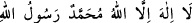
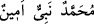
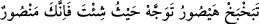

olduğu ise ancak mühür, yâni anahtar ile bilinir. Allah Teâlâ “bilinmeyi sevdim”
buyurdu. Böylece Habîb’in dilinden sevgiyle ilgili feyiz ile irfân/ma‘rifet hasıl oldu. Bu
yüzden Hâtem’e “Habîbullah” denildi. Çünkü Melik’in hazinesi üzerindeki mührün
eseri, hazinede olanı sevmenin sûretidir.”
Demişlerdir ki: “Peygamberlerin sonuncusu” ifâdesinin mânâsı şudur: Cenâb-ı Hak
bütün peygamberin nübüvvetini topladı ve Hz. Peygamber (a.s.)’ın kalbini o topluluğun
madeni (özü) yaptı. Nübüvvet mührünü onun üzerine vurdu ki hiçbir düşman, nefsin
hevâsı, şeytanın vesvesesi ve kötü düşünceler peygamberlik makâmına yol bulup
yaklaşamasın. Diğer peygamberlerde bu nübüvvet mührü yoktu. Bu sebeple dünyevî
düşüncelerden ve vehimlerden emin değildiler. Bu sebeple Cenâb-ı Hak onun şerefi
olan mührü içinde gizli tutmayıp bakan herkes görsün diye iki omzu arasında güvercin
yumurtası gibi açıkça görünür yapmıştır.”
Peygamberimiz (s.a.)’in sıfatlarından birisi de iki omzu arasında nübüvvet mührü
olmasıdır. Bu mührün Peygamberimiz (s.a.)’in iki omzu arasında olmasının sebebi,
İmam Demîrî’nin Hayâtü’l-hayevân’ındaki şu naklinden anlaşılabilir: “Allah
dostlarından birisi Allah Teâlâ’dan şeytanın gelip insana nasıl vesvese verdiğini
kendisine göstermesini istedi. Hak Teâlâ ona insanın heykelini/vücudunu billur/cam
suretinde gösterdi. İnsanın iki omzu arasında kuş yuvası gibi siyah bir ben ve alâmet
vardı. Pusuya yatmış olan İblis fil hortumu gibi uzun hortumuyla hınzır suretinde gelip
insanın her tarafını araştırmaya başladı. Nihâyet insanın iki omzu arasından hortumunu
onun kalbine doğru soktu ve ona vesvese verdi. Bu kişi Allâh’ı zikredince İblis hemen
geri çekildi, sindi ve pusuya yattı. İşte bundan dolayı İblis’e hannâs, yâni sinen, pusuya
çekilen denilmiştir. Çünkü kalpte zikir nûru hâsıl olunca İblis hemen gerisin geri çekilir.
Hz. Peygamber (s.a.)’in mührü, keklik yumurtası kadardı. Bu mührün etrafında yeşile
çalan kıllar vardı. Üzerinde “
” veya “
(Muhammed
emîn bir peygamberdir.)” ya da başka bir şey yazılıydı. Nitekim es-Seb‘iyyât’ta şöyle
denilmiştir: Nübüvvet mühründe şöyle “
(Ey aslan atıl,
istediğin tarafa yönel, elbette sen muzaffersin)” yazılıydı.
Bu rivâyetlerin arası şöyle te’lif edilebilir: Bu yazıların sayısının ve türünün farklı
oluşu, hâllere, tecellîlere veya bakanların bakışına göre değişiklik göstermiştir.
İki omuz arası şeytanın giriş yeri olduğu için Hz. Peygamber (a.s.) iki omzu arasından
hacamat yaptırır (kan aldırır) ve bunu ashabına emrederdi. Şeytanın nüfuz ve
müdâhalesini zayıflatıp daraltmak için bunu kendisine Cebrail (a.s.) tavsiye etmişti.
Çünkü şeytan vesvesesini kan damarları yoluyla kalbe ulaştırır. Hz. Peygamber (s.a.)
şeytanın vesvesesinden korunmuştur. Çünkü O: “Allah bana yardım etti de benim
şeytanım müslüman oldu.”[235] buyurmuştur. Yâni bu ilâhî mühürle olmuştur. Âdem
(a.s.)’a musallat olan şeytan ise müslüman olmamış ve bu yüzden ona vesvese vermiştir.
Sifru’s-sâade’de şöyle denilmiştir: “Yahudiler Peygamberimiz (s.a.)’e sihir yapıp
hastalık/sihrin tesiri O’nun mukaddes zâtına ulaşınca, mübarek başından hacamat